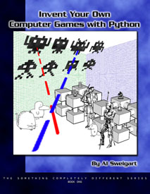

Invent Your Own Computer Games with Python, Book 1
Download the entire book as a PDF. 
You can also download the source code or the executable versions of the games (these do not require Python to be installed.)
Read it on the web:

{kind=link}
Leave a comment on the blog page for this book.
Subversion Repository
IYOCGwP is also available via a Subversion repository:
http://pythonbook.coffeeghost.net/book1svn
Version 2 is the latest version of the PDF book. The website and subversion repository will always have the absolute latest versions of the book.
Version 2 does not have a working Table of Contents, proper layout, or page numbers. These will be added later. (The PDF is just a PDF version of the web pages, and not intended to be printed out as a bound book yet.)
IYOCGwP is free to copy and distribute under a Creative Commons license.
Check on the book's progress and news.
Copyright 2008 © by Albert Sweigart
"Invent Your Own Computer Games with Python" is licensed under a Creative Commons Attribution-Share Alike 3.0 United States License.